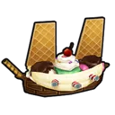

Chefe Tribal
Lutador
Quando a tribo precisa de um líder, um chefe tribal ergue-se entre os valentes.
Atributos
Ataque (100)
1.160
Defesa (100)
1.170
Vida (100)
1.120
Hypermax: o build mais forte
17º de 42 classes no ranking Hypermax
Poder no placar
981.117
Poder no perfil
784.893
Ataque
18.386
Defesa
139.666
Vida
35.019
Crítico
5%
Dano crítico
×2
Elemento
175
Braços de Almirante de Titã T15
Runa: Elemento Apoteose · Espírito: Espírito de Titã
Cabeça de Ursinho de Pelúcia T15
Runa: Elemento Escaldante · Espírito: Espírito de Titã
Membros Posteriores do Xenótipo T15
Runa: Elemento Escaldante · Espírito: Espírito de Titã
Pés de Ursinho de Pelúcia T15
Runa: Elemento Escaldante · Espírito: Espírito de Titã

A Bananaventura T16
Runa: Elemento Escaldante · Espírito: Espírito de Titã
A popa de Bonaventura T16
Runa: Elemento Escaldante · Espírito: Espírito de Titã
Habilidades: Força Ancestral T4, À Prova de Balas T4, Além do Imortal T4, Pele de Titã T4, Titã do Escudo Supremo T4
Calculado só com os dados do jogo: qualidade Lendária, Forjado nas Estrelas, Ascensão e Transcendência, nível 50.